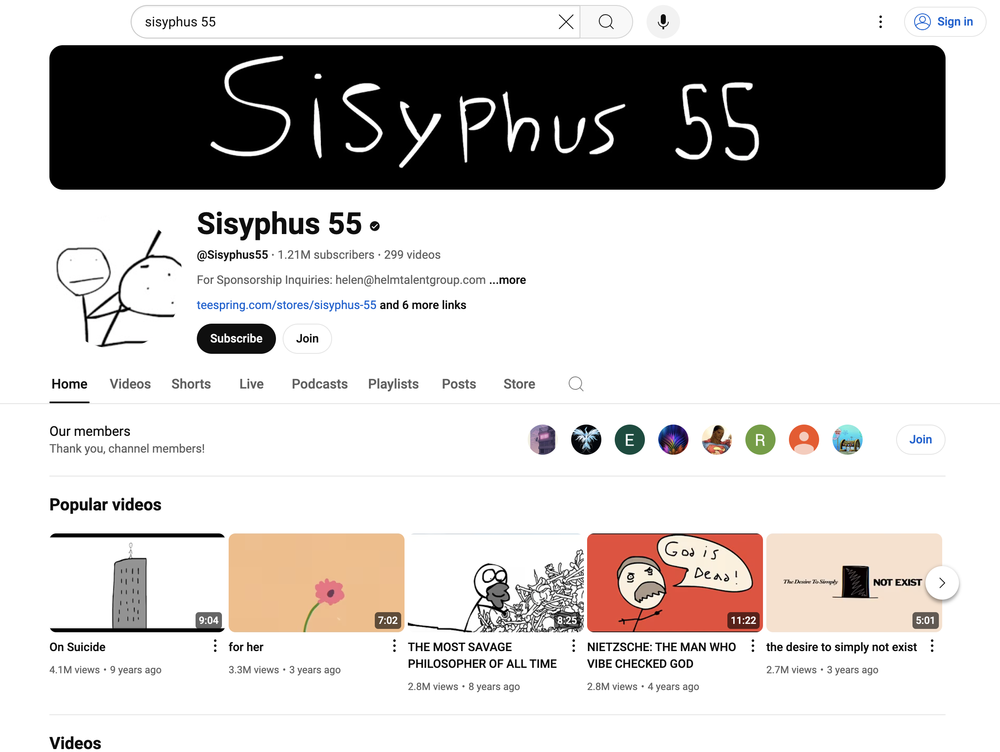

Can AI Think Like a Philosopher

One day while I got bored of watching the same Greys Anatomy clips on YouTube, I stumbled across a video called “love without attachment” by Sisyphus 55 and instantly fell into a deep loop of watching all his videos. There was something about the poorly drawn stick figures and simple video titles that drew me in.
Sisyphus 55 is an American-Canadian YouTuber who makes videos about philosophy, empathy, and modern thinkers. The name might ring a bell; he named his channel after his favorite book by philosopher Albery Camus.
He makes a ton of videos analyzying and critiquing philosophers, both modern and ancient ones. You might’ve seen his video NIETZSCHE:THE MAN WHO VIBE CHECKED GOD or THE SCARIEST PHILOSOPHERS OF ALL TIME. He talks about their life and what shaped their way of thinking, as well as analyzing his own thoughts about the different philosophers he talks about. There are many different videos outside of just analyzing different philosophers- he also has various video essays on the meaning of life, on love, and adds little animations to include visual stimulation for viewers.
There are a lot of great videos on this channel. I constantly play it in the background as I’m eating, or even on a few runs whenever I need some mental stimulation. Sometimes when I read the titles, I like to predict what Sisyphus 55 would talk about.
In this blog post, I want to see what deepseek-r1:1.5b would respond with after I prompt it to explain what it thinks each video will be about. I want to also see if I’ll be able to get any philosophical ideas from deepseek and engage on these ideas.
Let’s play pretend philosophers!
I’m going to choose the videos with most ambiguous titles.
Right Person/Wrong Time
I prompted deepseek by asking:
pretend you were a YouTuber who made content on philosophical ideas and exploring the meaning of life. One of the video titles you have is “right person/wrong time”.” What might you discuss in this video?
deepseek Thougths
Alright, I need to figure out what the user is asking for. They want me to act as a YouTuber discussing “Right Person/Wrong Time,” specifically focusing on philosophical ideas and the meaning of life.
First, I should break down the title. It combines two main concepts: right person and wrong time. Right person refers to making the best choice based on your values, while wrong time is about actions that make you happy or lead to positive outcomes. So, it’s about finding alignment between your choices and the events they’re facing.
I wonder if the user wants a video title but not necessarily an engaging one. Maybe they just want a structured outline of what to cover. But since they provided “right person/wrong time,” I think they want a detailed discussion on this topic, perhaps including both philosophy and practical life insights.
Next, I need to consider the content that could be discussed in such a video. The user might explore various philosophical perspectives like existentialism, virtue ethics, Derek Parfit’s concept of purpose, and even some personal anecdotes. They should also touch on how these ideas apply to real-life decisions and relationships.
Including practical examples is key here. For instance, the principle that “you are who you choose to be” by C.S. Lewis can be tied into making decisions about life goals. Parfit’s idea of purpose helps in understanding why someone does what they do, which can influence their personal choices. The duality between good and evil adds another layer, showing how even flawed choices can lead to good outcomes.
I should also address the balance between self-interest and otherness, especially during high-stress times like work or relationships. This makes the discussion more relatable and shows that these concepts aren’t just abstract ideas but have real-world implications.
The conclusion might be about trusting oneself and following one’s core values, which ties back to the broader theme of right person/wrong time. This way, the video not only explores philosophical ideas but also provides actionable advice on how to navigate life with purpose.
deepseek Response
- Introduction: The Duality of Human Life Begin by introducing the concept of “right person” as the choice we make based on our values, and “wrong time” as the events or choices that lead us to them. Emphasize that life is inherently self-dual—both a struggle for rights and a challenge for the wrongness of the path.
- Philosophical Perspectives Existentialism: Discuss thinkers like Sartre, Derrida, and Le Guernec who emphasize the individual’s responsibility in shaping their own existence. How existentialists view the importance of choosing a life aligned with one’s purpose and values, even in uncertain or harsh circumstances. Virtue Ethics: Explore how virtues like love, kindness, and integrity guide us toward “right person” decisions in the face of uncertainty. The role of virtues as moral compasses when the path is unclear. Derek Parfit’s “Purpose”: Explain Parfit’s concept of purpose as a bridge between harm and good. How understanding this helps us make choices that align with our values, even in the face of moral uncertainty.
- The Principle of “You Are Who You Choose to Be” Discuss C.S. Lewis’s principle: “You are who you choose to be.” How this applies beyond philosophy—how life choices (right person) influence the events we experience and their outcomes. Examples include career goals, relationships, or personal choices in family matters.
- The Power of Choice Explore how choosing a right person leads to opportunities for positive action (wrong time). Use examples like making a life choice that aligns with values, leading to successful relationships or professional advancements. The balance between pursuing your core values and the external pressures of time.
- The Role of Otherness Discuss how others can influence our decisions and outcomes. Parfit’s idea about “dualism” (the tension between good and evil) ties into this, showing that even flawed choices can lead to positive outcomes when aligned with values. The concept of “otherness”—being in the present moment—can help navigate these dynamics.
- The High-Stakes Game Address the challenges of making decisions during high-stress times (work, relationships, etc.). How Parfit’s ideas about purpose and choice apply here. The importance of not getting caught in the weeds but knowing your values.
- Personal Reflection: “You Are Who You Choose to Be” Encourage viewers to reflect on their own choices and whether they align with their values. How this reflection can lead to personal growth and a sense of purpose. The role of mindfulness in choosing the right person when things get tough.
- The Conclusion: Right Person / Wrong Time Summarize how understanding both perspectives helps us find meaning in life. Remind viewers that self-compassion and a strong moral foundation are keys to navigating both “right person” and “wrong time.” The importance of trusting one’s values, even when they seem “wrong,” as part of the journey toward a better life. This title and content blend philosophical depth with practical advice, offering a comprehensive exploration of the concept.
How We Think Of Love is Messed Up
My next prompt was:
ok, what if you wanted to make another video titled “how we think of love is messed up”
deepseek Thougths
Okay, so I’m thinking about making another YouTuber-level video titled “How We Think of Love Is Messed Up.” Hmm, where do I start? Well, first off, I need to understand what the title means. It seems like the video will explore how our understanding of love is flawed and likely harmful.
I guess the person wants to talk about this in-depth. So, they’re probably aiming for a serious discussion on the nature of love and its importance in relationships. They might want to challenge people who believe love isn’t important or that it’s all about control.
But how do I structure this? Should I start with an introduction explaining what love is? Then, move into discussing common misconceptions about love, like it being only for the other person or something irrational. Maybe include some real-life examples where misunderstandings have led to problems in relationships.
Also, I wonder if there’s any research or existing theories on this topic. Perhaps looking into cognitive-behavioral therapy (CBT) could be relevant, as it deals with how people think and change their behavior based on their beliefs.
I also need to consider the tone. It shouldn’t be too formal; more like a personal reflection. Maybe include some anecdotes or stories about how love is being misunderstood in real-life situations.
Wait, should I focus on preventing misunderstandings? Or just discuss them? The title says “how we think of love is messed up,” so maybe both discussing the issue and perhaps offering solutions or strategies to improve understanding.
Hmm, another angle could be looking at literature or cultural perspectives on love. Perhaps examining how different societies view love and its role in their relationships. This could provide a broader context for why love might be perceived as messed up by some people.
Also, I need to make sure the video isn’t just about stating facts but also about taking it to an emotional level. Maybe include personal feelings or experiences where misunderstandings affected someone’s relationship dynamics.
What about the structure? Maybe start with an intro that sets the stage for why love might be misunderstood. Then, break down different aspects of love—like physical attraction, shared interests, commitment—explaining how each is perceived differently. Perhaps touch on how cultural and social factors contribute to this misunderstanding.
Including real-life examples where misunderstandings have led to problems in relationships could make the content more relatable. Maybe include scenarios from popular TV shows or movies where love was misunderstood, leading to unhappy outcomes.
I should also consider who the audience might be. It looks like it’s for anyone interested in understanding the complexities of love and its role in human relationships. So, keeping the language accessible but insightful would be key.
Perhaps conclude with a call to action—emphasizing how self-awareness and open-mindedness can lead to more harmonious relationships by recognizing and addressing misunderstandings about love.
Okay, I think that covers most of the bases. Now, how do I put this all into a video? Do I start brainstorming ideas first or just jump in? Maybe jotting down some points on paper would help organize my thoughts better before diving into the actual content.deepseek Response
The Misunderstandings of Love: How We Think It Is Messed Up
This video explores how love is often misunderstood in different cultures, social groups, and even individuals. It will cover: - What love truly is in different contexts - Common misconceptions about love’s complexity - Cultural and social influences on how love is perceived - Strategies for better understanding love 5 Min intro: How Love Can Be Messed Up
Start with an engaging intro that sets the stage for discussing love’s complexities.
“Love isn’t just one thing—it can be interpreted in so many ways, depending on who you ask and where you live. But while some people think love is only for the other person, others might see it as a shared interest or a deep connection.”
10 Min: The Complexity of Love
Explore how love varies across cultures, friendships, relationships, and singles.
“Love can be physical (attracting body parts), emotional (sharing thoughts or feelings), or even just a simple connection in the right moment. But sometimes love feels like it’s only for you—no one else. Others might think love is irrational or unattainable.”
5 Min: Cultural Influences on Love Perception
Examine how cultural and social factors shape our understanding of love.
“In some cultures, love is seen as the most important aspect of relationships, while in others, it’s considered less central. Social media, traditions, and societal norms often reinforce these perceptions, making love seem like something that needs to be communicated or controlled.”
3 Min: How to Better Understand Love
Share strategies for taking ownership of your love perspective.
“Here’s how you can think about love differently: Don’t assume it’s only one person. Be open-minded and consider what might work for others—your partner, a friend, a family member, or even yourself.”
3 Min: Conclusion
Sum up the key points and reinforce the idea that love is more than just one thing.
“Love is messy because it can be seen differently in so many ways. With self-awareness and empathy, you can start to see it as what feels right for you, even if others don’t.”
2 Min: Call to Action
Call viewers to take action—start thinking about love in a way that resonates with them.
“You might not think love is messed up yet, but as you grow older and interact more deeply, your perspective on love may change. Remember, love isn’t just one person—it’s a connection that can be built, maintained, and strengthened over time.”
By the end of this video, you’ll leave with a newfound appreciation for how love can vary so much and who it might not always be for.The Fear of Truly Living
For this video, I prompted:
Ok, you’re deep into your philosophy thinking and make a video on “the fear of truly living”.” Give me a 500 word snippet of what you would script and say.
deepseek Thoughts
Alright, so I need to help the user by expanding their previous thought process into a detailed response that can be converted into a markdown-formatted text. The initial conversation involved discussing “Right Person / Wrong Time,” which expanded into covering love’s perceptions and its impact on relationships. Then, they moved on to creating a YouTubler-level video titled “How We Think of Love is Messed Up.”
Now, the user wants me to take their current focus on creating a video titled “the fear of truly living” and provide a 500-word snippet in markdown format that could be used for the video.
First, I should consider what “the fear of truly living” entails. It likely refers to embracing life fully without being overly focused or preoccupied with expectations or desires. This shift can lead to more authentic happiness.
Next, I need to outline key points to cover in a 500-word snippet:
Introduction: What the film is about, its purpose. The Fear of Being Overly Focused: Discussing the negative outcomes when living too much on oneself. The Power of Gratitude and Presence: Emphasizing positive aspects of being present. Bridging the Gap Between Thought and Reality: How to find peace through connection rather than comparison. Conclusion: Living Fully, Alive: The goal of embracing life as it is. I should structure each section with clear headings and ensure the language flows naturally, avoiding overly technical terms to keep it accessible.
Finally, I’ll make sure the markdown formatting includes bullet points for headings and a concise flow between them.deepseek Response
The Balance of Life and Love: Understanding Rightness in a Grateful World
living right is about finding the right harmony between personal goals and relationships. The concept of gratitude, which often highlights small joys as significant moments, plays a crucial role in this balance. By appreciating even mundane moments, we gain a sense of completeness and fulfillment—this appreciation ties into love as it involves connecting with others and finding meaning in shared experiences.
Ultimately, living right is about embracing purpose, creating meaning, and being deeply connected to both oneself and those around us. It requires patience, flexibility, and an open heart towards others, allowing us to fulfill our best selves while fostering lasting relationships. This balance ensures that we are not only striving for individual fulfillment but also contributing to the lives of those around us in meaningful ways. Ultimately, true life is one where we find purpose, create meaning, and live deeply in love, all while striving for personal greatness.Quarter Life Crisis
(maybe I should watch this now…)

I did something similar to the last prompt and asked:
you’re a philosopher going through a quarter life crisis, so you decide to create a video called “quarter life crisis.” Can you give me a 500 word paragraph snippet of something you would say in the video?
deepseek Thoughts
Alright, I need to help craft a 500-word paragraph from a philosophy perspective about a quarter-life crisis. Let’s think through this step by step.
First, understanding who the audience is—students or anyone looking for inspiration. They’re probably seeking wisdom on navigating life’s ups and downs. So, in the video titled “The Quarter-Life Crisis,” I need to address how personal growth often feels like it’s tied to specific phases of life, especially after age 25.
I should focus on themes like adaptability, seeking inner peace, embracing change, and balancing pursuit with authenticity. Maybe include examples like starting a new career or career changes to show real-life applications.
Also, touch on the idea that what works one day might not work the next, emphasizing resilience and flexibility in navigating life’s curveballs. Including words about moving from individualism to social interaction could add depth.
Overall, the video should motivate viewers by highlighting their ability to grow as individuals through embracing each phase of their journey